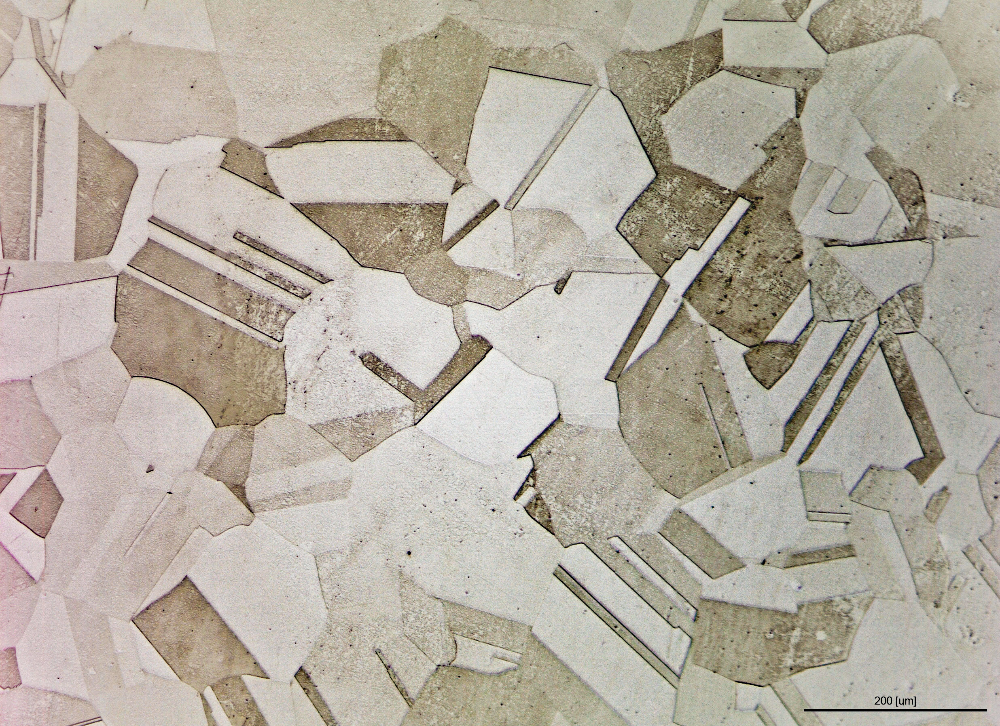

Executive Summary
"AI 모델보다 라벨이 더 비싸다"는 말은 비유가 아닙니다. 스페인 연구진이 2026년 6월 공개한 한 논문이 이를 숫자로 증명합니다. 전문가 3명이 철강 미세조직 사진 82장에 픽셀 단위 마스크를 칠하는 데 170시간이 걸렸습니다. 이 글은 그 170시간을 37시간으로 줄인 방법과, 그래도 줄지 않은 22%가 무엇을 말하는지를 봅니다.
핵심은 분업입니다. 라벨이 전혀 없는 상태에서 학습하는 비지도 CNN이 초벌 마스크를 깔고, 전문가는 그 위에서 틀린 부분만 고칩니다. 흥미로운 점은 초벌 품질이 낮았다는 것입니다. 사전 라벨의 평균 IoU는 32~49%에 그쳤습니다. 그런데도 시간은 78% 줄었습니다. 사람은 "처음부터 그리는" 일보다 "고치는" 일에 압도적으로 빠르기 때문입니다.
그렇다면 남은 22%는 왜 여전히 사람 몫일까요. 이 질문이 이 글의 가장 날카로운 지점입니다. 답은 "기계의 정밀도가 부족해서"가 아니라 "거기에 판단이 필요해서"입니다.

주요 수치
네 숫자가 이 연구의 결과와 역설을 압축합니다. 앞 두 수치는 절감의 규모이고, 뒤 두 수치는 그 절감이 일어난 조건과 한계입니다.
출처: Fernandez-Moreno et al. (arXiv:2606.19934)
170h → 37h
어노테이션 시간
전문가 3명·사진 82장 기준
78%
시간 절감률
유형별 73~83%
IoU 32~49%
사전 라벨 품질
낮아도 절감 효과는 최대
22%
사람 몫으로 남은 시간
정밀도 아닌 판단의 영역
170시간이 37시간이 된 경위
철강은 같은 강철이라도 내부 미세조직이 다릅니다. Alpha, TiB2, TiN 같은 상(phase)이 어떤 비율로 어떻게 분포하느냐가 강도와 내구성을 결정합니다. AI로 이 조직을 자동 분류하려면, 먼저 사진 한 장 한 장에서 각 픽셀이 어떤 상에 속하는지를 사람이 칠해 둔 정답 마스크가 필요합니다. 이 작업이 어노테이션입니다.
문제는 비용입니다. 전문가 3명이 사진 82장을 밑바닥부터 픽셀 단위로 칠하는 데 170시간이 들었습니다. 시간당 전문가 비용을 100달러로만 잡아도 사진 82장의 라벨에 약 1만 7천 달러가 들어간 셈입니다. 모델 한 번 학습시키는 비용보다 몇 배 클 수 있는 금액이 데이터 준비에만 묶입니다.
연구진은 이 시간을 줄이기 위해 다섯 가지 비지도 알고리즘을 비교했습니다. 회색조 히스토그램을 쪼개는 Multi-Otsu, 그래프 기반의 슈퍼픽셀, K-means 군집, Meta의 범용 분할 모델 SAM, 그리고 특징 유사도와 공간 연속성을 함께 최적화하는 딥러닝 기반 비지도 CNN입니다. 최종 선택은 비지도 CNN이었습니다. 모든 강재 유형에서 일관된 성능을 냈기 때문입니다.
선택된 방법으로 초벌 라벨을 깔자 전체 어노테이션 시간은 170시간에서 37시간으로 떨어졌습니다. 78% 절감입니다. 강재 유형별로 뜯어 보면 절감 폭은 더 선명합니다.
함께 공개된 데이터셋은 사진 82장, 5개 미세조직 상(Alpha·TiB2·TiN·FeTiB·Fe2B), 3개 산업 공정 루트로 구성됩니다. 연구진은 이를 MIT 라이선스로 공개하며 "현존 최대 규모의 공개 철강 미세조직 분할 데이터셋"이라고 밝혔습니다. 절감 방법뿐 아니라 그 결과물까지 검증 가능하도록 열어 둔 셈입니다.
기계가 깔고 전문가가 다듬는다
이 파이프라인의 구조는 단순합니다. 비지도 CNN이 라벨 없이 이미지 자체의 패턴만 보고 초벌 마스크를 생성합니다. 그 마스크를 라벨링 도구에 올리면, 전문가는 빈 화면이 아니라 이미 칠해진 그림 위에서 작업을 시작합니다. 틀린 경계를 옮기고, 놓친 영역을 채우고, 과하게 나뉜 부분을 합칩니다.
역설은 여기에 있습니다. 초벌 마스크의 품질은 높지 않았습니다. 사전 라벨의 평균 IoU(예측과 정답이 겹치는 비율)는 32~49% 수준이었습니다. 절반에도 못 미치는 정확도입니다. 그런데도 시간은 가장 많이 줄었습니다. 직관과 어긋나 보이지만 이유는 분명합니다. 전문가에게는 백지에서 형태를 새로 그리는 일이 가장 느리고, 이미 그려진 형태를 평가하고 손보는 일은 훨씬 빠릅니다.
절감은 평균에만 나타난 게 아닙니다. 사진 한 장을 손보는 데 걸리는 시간의 편차도 함께 줄었습니다. 밑바닥부터 그릴 때는 이미지마다 작업 시간이 들쭉날쭉했지만, 초벌 위에서 고치는 방식에서는 그 변동 폭이 눈에 띄게 좁아졌습니다. 평균이 빨라졌을 뿐 아니라 한 장에 얼마가 걸릴지 미리 가늠할 수 있게 됐다는 뜻입니다. 라벨링 일정과 예산을 사전에 잡을 수 있다는 점에서, 이 예측 가능성은 평균 절감만큼이나 실무적으로 중요합니다.
완벽한 초안이 아니어도 방향만 맞으면 검수자의 생산성은 폭발적으로 올라갑니다. 이는 이 논문만의 발견이 아닙니다. RLHF(인간 피드백 강화학습), 액티브 러닝, 모든 AI 보조 라벨링이 공유하는 원리입니다. 초안의 정확도보다 수정의 용이성이 생산성을 결정합니다.
완성된 마스크로 학습한 분할 모델(EfficientNet-b0 백본의 DeepLabV3+)은 강재 유형별 전용 모델이 IoU 48~67%, 단일 범용 모델이 40~55%를 기록했습니다. 유형별로 특화한 모델이 일관되게 더 나았습니다. 데이터가 갖춰진 뒤의 성능은 이렇게 따라옵니다. 결국 병목은 모델 쪽이 아니라 그 앞단의 라벨에 있었던 셈입니다.
22%가 왜 사람 몫인가
78%를 줄였다는 것은 22%가 끝내 줄지 않았다는 뜻이기도 합니다. 기계가 이 22%를 떠안지 못한 이유를 들여다보면, 라벨링 자동화의 진짜 경계선이 보입니다. 기계가 막힌 지점은 세 갈래였습니다.
- • 소수 클래스의 정밀 경계. TiN은 전체 픽셀의 0.17%, TiB2는 3.85%에 불과합니다. 면적은 작지만 재료의 성질을 좌우하는 중요한 상입니다. 기계는 이렇게 드물게 등장하는 클래스를 자주 놓치거나 다른 상으로 오분류합니다.
- • 과분할 오류. Alpha처럼 구조가 불규칙한 다수 클래스 내부에서, 알고리즘은 하나여야 할 영역을 여럿으로 잘게 쪼개곤 합니다. 전문가는 이 조각들을 다시 하나로 합쳐 줘야 합니다.
- • '불확실한(doubtful)' 영역의 합의. 어느 상인지 사람 눈으로도 단언하기 어려운 경계는, 전문가 3명이 협의해 최종 판정을 내립니다. 도메인 지식 없이는 대체할 수 없는 과정입니다.
세 갈래의 공통점은 분명합니다. 기계가 못 줄인 22%는 "정확도가 낮아서"가 아니라 "판단이 필요해서" 남았습니다. 과학적으로 의미 있는 소수 클래스를 알아보는 눈, 모호한 경계를 두고 합의하는 토론, 무엇이 오류인지 가려내는 검증. 이 셋은 더 좋은 알고리즘으로 메울 수 있는 종류의 빈칸이 아닙니다. 자동화가 전진할수록, 사람에게 남는 일은 줄어드는 게 아니라 더 판단에 가까운 일로 농축됩니다.
병목은 모델이 아니라 라벨이다
철강 미세조직은 좁은 사례지만, 이 연구가 정량으로 보여 준 구조는 AI-Ready Data 전반에 그대로 옮겨 갑니다. 모델 아키텍처는 오픈소스로 공유되고 컴퓨팅 비용은 빠르게 떨어지는 반면, 도메인 전문가가 손으로 정답을 다는 라벨링 비용은 좀처럼 내려가지 않습니다. 데이터 라벨링 시장이 매년 두 자릿수로 커지고 있는 이유도 여기에 있습니다. 한 업계 집계는 이 시장이 2030년까지 170억 달러 안팎으로, 연 20%대 속도로 불어날 것으로 봅니다. 모델은 점점 싸지는데 데이터를 정답으로 만드는 사람의 손은 점점 비싸지는 흐름입니다.
이 연구가 가리키는 해법은 라벨링을 통째로 없애는 게 아니라, 일의 성격에 따라 나누는 것입니다. 반복적이고 양이 많은 초벌은 기계에게, 판단이 필요한 마무리는 사람에게 맡깁니다. 기계 초안의 정확도가 완벽하지 않아도 괜찮습니다. 중요한 것은 사람이 그것을 빠르게 검수할 수 있느냐입니다. 검증 루프가 잘 설계될수록 같은 전문가가 같은 시간에 더 많은 데이터를 정답으로 만들 수 있습니다.
페블러스가 말하는 데이터 품질 자율화의 골자도 다르지 않습니다. 기계가 할 수 있는 것은 기계에게 맡겨 자동화하고, 사람은 판단이 필요한 자리에 집중하도록 남깁니다. 철강 사진 82장에서 일어난 170시간 대 37시간의 차이는, 그 분업이 추상적 구호가 아니라 측정 가능한 생산성이라는 점을 보여 줍니다. 자동화의 가치는 사람을 치우는 데 있지 않고, 사람의 판단을 가장 값진 자리로 옮기는 데 있습니다.
참고문헌
R.1학술 논문
- 1.Fernandez-Moreno, M., Guerrero, M., Rementeria, R., Mesejo, P., & Moreno, R. (2026). "Speeding up the annotation process in semantic segmentation industrial applications." arXiv:2606.19934.
- 2.Stuckner, J., et al. (2023). "A unified microstructure segmentation approach via human-in-the-loop machine learning." Acta Materialia.
R.2데이터셋
- 3.Fernandez-Moreno, M., et al. (2026). "Steel Microstructure Segmentation Dataset." Zenodo. DOI: 10.5281/zenodo.18826160. MIT License.
R.3업계·시장
- 4.HeroHunt AI. (2026). "The Ultimate AI Data Labeling Industry Overview (2026)."